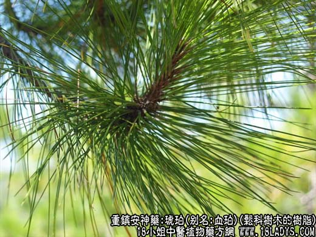
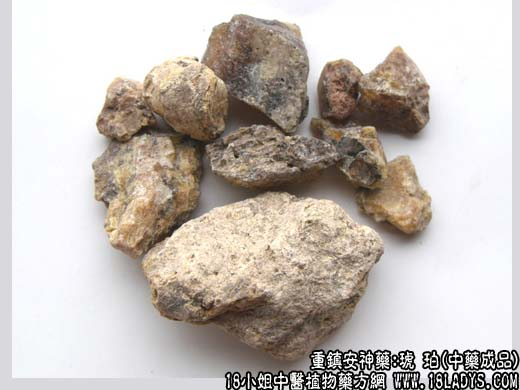
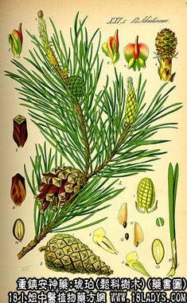

本品为较常用中药。始载《名义别录》，列为上品。
别名：血珀、云珀、煤珀。
来源：琥珀为松科树木的树脂，埋藏于地层中，经过多年转化而成为化石样物质，故有千年松脂化琥珀之说。多在开山，挖土或采煤时发现。
产地：琥珀主产于云南、广西、河南、福健、贵州等地区，煤珀主产于辽宁抚顺。
性状鉴别：琥珀呈不规则的块状或碎粒状，色泽不一。
主要成分：含树脂、挥发油、琥珀松香高酸、琥珀银松酸、琥珀脂醇、琥珀香醇等。
功效与作用：镇静安神、利水通淋、活血祛瘀。
炮制：研细末，生用。
性味：甘、平。
归经：入心、肝、膀胱经。
功能：安神定惊，散瘀血，利小便。
主治：心神不安、惊悸不寐、多梦，产后瘀血阻滞腹痛，淋病尿血，金疮损伤等症。
临床应用：1、治惊痫、不眠，配合欢花、夜交藤、白芍、酸枣仁等，或单与朱砂合用，即朱珀散，每服0.9～1.2g。
2、治肾结石和血淋、热淋，取其有利尿、理血作用。常配旱莲草、冬葵子、猫须草等，方如琥珀通淋方。如偏于热而有口渴者，配猪苓、萹蓄、木通。
3、治癓瘕之疼痛，尤其血瘀腹痛，取其有活血祛瘀作用。常配三棱、鳖甲等。
4、试用于治角膜翳，用琥珀配枸杞子、菊花、夜明砂等，方如琥珀杞菊汤。
用量：1.3～3g，入丸散剂，或研末冲服，也可后下入汤剂。
处方举例：1、琥珀通淋方：琥珀2.1g（冲），炙山甲12g，旱莲草，冬葵子各18g，木通9g，木香9g，猫须草18g，荠菜24g，大枣30g，水煎服，治肾结石血尿。
2、琥珀杞菊汤：琥珀2.1g（冲），枸杞子12g，菊花9g，女贞子12g，夜明砂9g，密蒙花9g，菖蒲4.5g，水煎服。